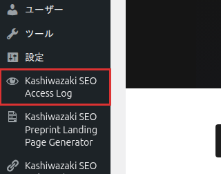

インストール・初期設定
Kashiwazaki SEO Super Access Log のインストール方法と、アクセスログ記録に必要な基本設定を説明します。
インストール手順
WordPress管理画面から プラグイン > 新規追加 に移動し、「Kashiwazaki SEO Super Access Log」を検索します。または、プラグインのZIPファイルを プラグイン > 新規追加 > プラグインのアップロード からアップロードします。
「今すぐインストール」をクリックし、インストール完了後「有効化」をクリックします。有効化時にカスタムテーブル（kssl_access_logs）が自動作成されます。
管理画面の左メニューに「Kashiwazaki SEO Access Log」が追加されます。クリックして設定画面を開きます。

有効化直後から、デフォルト設定でアクセスログの記録が開始されます。必要に応じて以下の設定を調整してください。
基本設定
Cookie設定
訪問者の識別にCookieを使用します。Cookie IDにより、同一ユーザーの再訪問をトラッキングできます。
| 設定項目 | 説明 |
|---|---|
| Cookie有効期間 | 訪問者識別Cookieの有効時間（デフォルト: 24時間） |
| 静的ファイルトラッキング | CSS/JS/画像などの静的ファイルへのアクセスも記録するかどうか |
Cookieはフロントエンドでのみ設定されます。管理画面へのアクセスはトラッキング対象外です。
データ保持期間
アクセスログの保持期間を設定します。期間を超えたログは自動クリーンアップCronによって削除されます。
| 設定項目 | 説明 |
|---|---|
| 保持日数 | ログを保持する日数（デフォルト: 90日） |
| 自動クリーンアップ | 保持期間を超えたログを自動削除するON/OFF |
保持期間を短く設定すると、過去のアクセスデータが失われます。必要に応じてCSVエクスポートでバックアップを取ってから変更してください。
ボット検出パターン
User-Agentの文字列パターンでボットを自動識別します。デフォルトで主要な検索エンジンクローラーのパターンが登録されています。
設定画面のボット検出セクションで、ボットとして識別するUser-Agentパターンを確認・編集します。
パターンは正規表現で指定します。1行に1パターンを記述してください。
パターンに一致するUser-Agentからのアクセスは、ログ上で「ボット」として自動分類されます。
不審なアクセスの検出
リクエストURLに特定のキーワード（wp-config.php、.env、/etc/passwd、SQLインジェクションパターンなど）が含まれるアクセスを不審なアクセスとして自動検出します。
除外設定
| 設定項目 | 説明 |
|---|---|
| 除外URIパターン | ログ記録から除外するURIパターン（正規表現） |
| 静的ファイル除外 | CSS/JS/画像等の静的ファイルアクセスを除外 |
| 自サーバーIP除外 | サーバー自身のIPアドレスからのアクセスを除外 |
| 空UA除外 | User-Agentが空のアクセスをブロック |